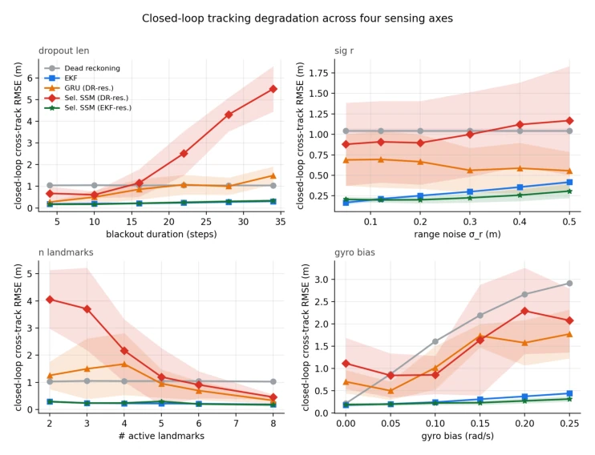
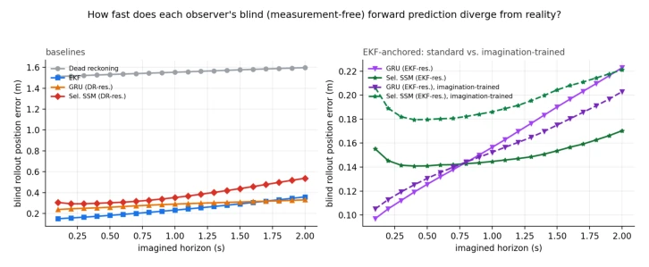
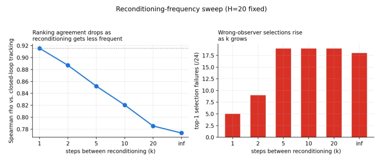
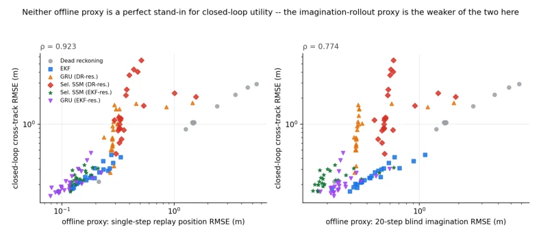
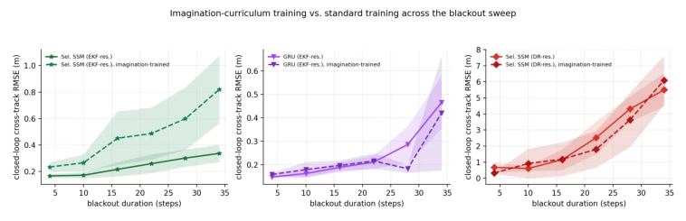
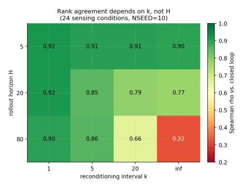
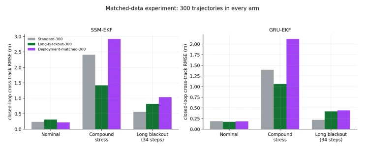
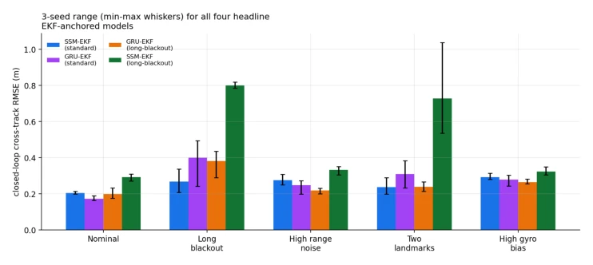
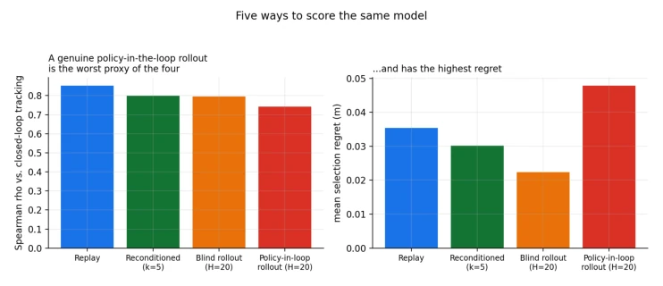
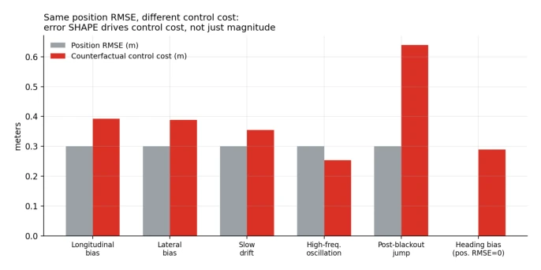

这篇论文给热得发烫的 World Model 研究泼了一盆冷水。大家都忙着训练能预测未来的模型，却很少关心“预测准”是否等于“控制稳”。作者用了一个非常“朴素”的差速机器人实验，证明了在闭环控制中，离线评估指标（如 rollout error）和实际表现可能完全脱节。最讽刺的是，传统的轨迹回放（Replay）RMSE 居然比看似更高级的无测量 Rollout 更能预测闭环性能。当然，这实验太“干净”了，没图像没复杂动力学，结论能不能迁移到 Vision-Language-Action 模型上还是个问号。但至少它提醒了社区：别光看预测误差，得看你的评估协议是不是在模拟真实的反馈循环，否则就是在自嗨。
This paper pours cold water on the overheated World Model research. Everyone is busy training models capable of predicting the future, yet few care whether "prediction accuracy" equates to "control stability". The author employed a very "simple" differential drive robot experiment to demonstrate that in closed-loop control, offline evaluation metrics (such as rollout error) and actual performance may be completely decoupled. Most ironically, the traditional trajectory replay (Replay) RMSE actually predicts closed-loop performance better than the seemingly more advanced measurement-free Rollout. Of course, this experiment is too "clean", lacking images and complex dynamics, so whether the conclusions can transfer to Vision-Language-Action models remains a question mark. At the very least, it reminds the community: do not just look at prediction errors; you must check if your evaluation protocol simulates a real feedback loop, otherwise it is merely self-indulgence.
研究动机Motivation
当前预测模型在机器人中的应用日益广泛，从状态估计到直接生成控制指令 [Ha and Schmidhuber, 2018; Gemini Robotics Team et al., 2025]。然而，现有评估体系存在严重缺陷：大多依赖开环预测精度（如多步 rollout 误差），忽略了闭环操作中传感器更新与状态修正的耦合效应。Lambert et al. [2020] 已指出模型精度提升未必带来策略性能改善，但在状态估计阶段，这一矛盾被进一步放大。现有工作如 Dreamer [Hafner et al., 2020] 或 Cosmos [Kim et al., 2026] 虽强调预测能力，却未明确评估协议中的测量更新频率如何影响排名一致性。这导致开发者可能选出一个离线表现优异但在闭环中发散的模型。本研究旨在填补这一空白，探究预测指标与闭环行为之间的真实关联，特别是测量更新模式在其中的调节作用。
The application of current predictive models in robotics is increasingly widespread, ranging from state estimation to directly generating control commands [Ha and Schmidhuber, 2018; Gemini Robotics Team et al., 2025]. However, the existing evaluation system has serious deficiencies: most rely on open-loop prediction accuracy (such as multi-step rollout error), ignoring the coupling effects of sensor updates and state correction in closed-loop operations. Lambert et al. [2020] have pointed out that improvements in model accuracy do not necessarily lead to improvements in policy performance, yet in the state estimation phase, this contradiction is further amplified. Existing works such as Dreamer [Hafner et al., 2020] or Cosmos [Kim et al., 2026], while emphasizing prediction capabilities, do not explicitly clarify how measurement update frequency in the evaluation protocol affects ranking consistency. This leads developers to potentially select a model that performs excellently offline but diverges in closed-loop. This study aims to fill this gap, investigating the true association between prediction metrics and closed-loop behavior, particularly the moderating role of measurement update patterns within it.

Figure 1: Closed-loop cross-track RMSE across four sensing-degradation sweeps. The observer with the lowest tracking error changes with the sensing condition, while the EKF-anchored estima- tors remain the most consistently stable group.
方法Method
整体框架基于受控的平面移动机器人实验。数据流包含：1. 状态估计器（6 种：DR, EKF, 及四种基于 DR/EKF 的残差 GRU/SSM 模型）；2. 三种评估协议（轨迹回放、无测量 Rollout、闭环路径跟踪）；3. 变量控制（24 种传感条件、不同预测 horizon H 和更新间隔 k）。创新点在于解耦了预测时长与测量修正频率。首先，使用 EKF 或 DR 作为解析参考，训练循环模型预测残差修正，确保模型结构可控。其次，设计三种协议对比：Replay 固定轨迹，Rollout 移除测量，Closed-loop 实时反馈。最后，通过网格搜索 H 和 k，量化两者交互对评估指标的影响。训练阶段还引入了长时传感中断（long-blackout）以测试鲁棒性。这种方法剥离了视觉和复杂动力学干扰，专注于状态预测与反馈控制的耦合机制，为评估协议设计提供了可解释的基准。
The overall framework is based on a controlled planar mobile robot experiment. The data flow includes: 1. State estimators (6 types: DR, EKF, and four residual GRU/SSM models based on DR/EKF); 2. Three evaluation protocols (trajectory replay, measurement-free Rollout, closed-loop path tracking); 3. Variable control (24 sensing conditions, different prediction horizon H and update interval k). The innovation lies in decoupling prediction duration and measurement correction frequency. First, EKF or DR is used as an analytical reference to train recurrent models to predict residual corrections, ensuring the model structure is controllable. Second, three protocols are designed for comparison: Replay with fixed trajectory, Rollout with measurements removed, Closed-loop with real-time feedback. Finally, through grid search of H and k, the interaction of the two on evaluation metrics is quantified. The training phase also introduced long-term sensing interruptions (long-blackout) to test robustness. This method isolates visual and complex dynamics interference, focusing on the coupling mechanism between state prediction and feedback control, providing an interpretable benchmark for evaluation protocol design.

Figure 3: Position error as the measurement-free rollout horizon increases in the nominal condition. Left: the six primary observers. Right: standard and long-blackout-trained EKF-anchored observers. Lower measurement-free propagation error does not necessarily correspond to lower closed-loop tracking error.

Figure 5: Effect of the measurement-update interval for a fixed rollout horizon of H = 20. The interval k is varied over {1, 2, 5, 10, 20, ∞} across the same 24 sensing conditions and six primary observers. Agreement with the closed-loop ranking decreases as measurement corrections become less frequent.
Experiments were conducted under 24 sensing conditions, including wheel slip, gyroscope bias, landmark noise, and interruptions. The baseline consisted of 6 state estimators. Main metrics included position RMSE, closed-loop cross-track RMSE, and Spearman ranking correlation. Core findings: The correlation between Replay position RMSE and closed-loop performance (rho=0.923) was significantly higher than that of 20-step measurement-free Rollout (rho=0.774). Under the 24 conditions, the frequency of Rollout incorrectly selecting the wrong estimator reached as high as 18/24. Ablation experiments showed that long horizon maintained high correlation under frequent measurement updates, but without updates the correlation dropped sharply to 0.32. In terms of training, long interruption training only improved EKF-anchored models (GRU-EKF RMSE decreased from 1.72 to 1.06), and was ineffective for DR-anchored models. This confirms that evaluation protocols must match the sensing and update patterns at deployment, rather than focusing solely on prediction duration.

Figure 2: Closed-loop cross-track RMSE versus two offline estimator scores for the same 144 observer-condition pairs. Replay position RMSE (left) is more closely associated with closed-loop tracking performance than the 20-step measurement-free rollout error (right).

Figure 4: Closed-loop cross-track RMSE for standard and extended-blackout training across the isolated sensing-outage sweep. GRU-EKF benefits primarily at the longest outages, whereas SSM- EKF degrades across the full sweep and SSM-DR shows no consistent improvement.

Figure 6: Spearman rank correlation with closed-loop cross-track RMSE over a grid of rollout horizons H ∈{5, 20, 80} and measurement-update intervals k ∈{1, 5, 20, ∞}, evaluated across all 24 sensing conditions and ten evaluation seeds. Long horizons retain relatively high ranking agreement when frequent measurement corrections are available, while the combination of long propagation and no correction produces the largest disagreement.

Figure 10: Closed-loop cross-track RMSE for three 300-trajectory training distributions under nom- inal sensing, combined sensing degradation, and an isolated long sensing outage. Extended-outage training performs best under combined degradation for both EKF-anchored recurrent architectures, while directly matching the evaluation outage distribution does not provide a consistent advantage.
其他图片Other Figures

Figure 7: Closed-loop cross-track RMSE across three training seeds for the four principal EKF- anchored recurrent estimators. Whiskers indicate the minimum and maximum values across seeds. SSM-EKF† exhibits the largest sensitivity to initialization, particularly under the longest sensing outage and with only two visible landmarks.

Figure 8: Comparison of offline evaluation protocols. The policy-coupled rollout has the lowest rank correlation with closed-loop performance and the largest mean selection regret among the four protocols considered.

Figure 9: Closed-loop effect of synthetic estimation-error sequences. Five sequences have identical position RMSE of 0.30 m, yet their resulting tracking cost ranges from 0.25 m for high-frequency oscillatory error to 0.64 m for a persistent post-outage displacement. A pure heading bias has zero position RMSE but produces 0.29 m of tracking error.